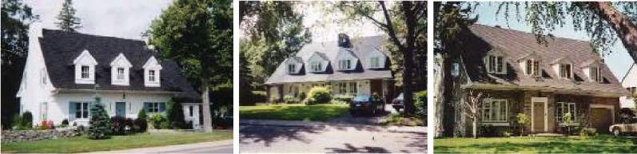

Canadian House Maison canadienne

© Ville de Mont-Royal, By-law 1449 art. 22
A 1930s–50s revival of the 18th-century Quebec farmhouse: a steep roof whose eaves flare out into “larmiers” that shelter the front door, a row of dormers, fieldstone walls, and a calm symmetrical front. It was the domestic face of a broader interwar interest in Québécois heritage. The distinctive move is the roof, which is asked to express the base of the house through its overhang.
A regionalist revival of the eighteenth-century Laurentian farmhouse: bell-cast roof whose eaves flare into larmiers sheltering the door, a row of dormers, fieldstone walls, a calm symmetrical front. The Canadian Encyclopedia locates its source in the anglophone rediscovery of pre-industrial Québec during the 1920s–30s, stimulated by Clarence Gagnon's paintings and encouraged by Percy Nobbs and Ramsay Traquair at McGill, whose surveys of old Québec buildings fed a fashion for fieldstone and pitched roofs among the province's leading domestic architects. TMR's Canadian houses are the suburban, builder-scale version of that fashion.
| Tenure / plan | single-family |
|---|---|
| Storeys | 1.5 |
| Roof form | bellcast |
| Roof pitch | – |
| Window proportion | vertical-2to1 |
| Principal cladding | stone-natural |
| Roofing | asphalt-shingle-dark |
| Garage | attached-set-back |
| Lot width | 15–22 m |
| Front setback | 14 m |
| Side setback | 3 m |
| Front yard green | 60 % |
What By-law 1449 says about this type
- At least 60 % of the front yard kept as vegetation
- Driveway of medium width
- Narrow pedestrian path distinct from the driveway
- Front setback of about 14 m from the sidewalk; side setbacks of about 3 m
- Typical lot width 15–22 m
- Habitable attic storey
- Main entrance sheltered by the roof's drip edge (larmier)
- Attached garages
- Garage volume and roof distinct from those of the main building
- Typical width of 11 m per semi-detached unit, 15 m for a detached house
- Base of the building expressed by the roof overhang
- Two- or four-slope roofs with dormers or a mansard
- Flared eaves (larmiers) typical of Canadian roofs
- Aligned openings and symmetrical composition
- Small-paned glazing
- Bay windows may be added if they respect the type
- Vertical window proportion (height = twice the width)
- Natural stone facing
- Dark asphalt shingle roofing
- Same roofing material on the main roof and on dormer roofs
Same word elsewhere
- Garden City House (Town of Mount Royal)
- Faubourg House (Town of Mount Royal)
- New England House (Town of Mount Royal)
- Georgian House (Town of Mount Royal)
- English Manor House (Town of Mount Royal)
- Bungalow (Town of Mount Royal)
- Cottage (Town of Mount Royal)
- Split-Level (Town of Mount Royal)
- Prairie House (Town of Mount Royal)
Same form elsewhere
- –
Same period elsewhere
- –
Same style elsewhere
- –